ELEGANCIA SIN LÍMITES
El Freak ONE es un nuevo reloj inspirado en el primer Freak que presenta sus tres
características distintivas: sin esfera, sin agujas y sin corona.


FREAK ONE
-

MÁS QUE HORAS
ICÓNICO
Presenta sus tres características distintivas:
sin esfera, sin agujas y sin corona.
CALIBRE UN-240 FABRICACIÓN
El movimiento automático del Freak ONE
tiene una reserva de marcha de 90 horas.
ELEGANCIA DEL DLC
Titanio revestido con DLC negro y
detalles en oro rosa.

DATOS TÉCNICOS
Espesor: 13,37 milímetros
Peso: 107,3 gramos
Resistencia al agua: 30 metros
Material: Titanio / oro de 18 quilates
Vaso: Zafiro
Dimensiones: Ø 44 mm
Movimiento: de cuerda automática
Complicacion: Carrousel Volador
Correa: Caucho texturizado
Color: Negro
TIEMPO EN MOVIMIENTO
El calibre UN‑240 no solo marca el tiempo: lo exhibe en movimiento.
MECÁNICA
La ingeniería detrás del movimiento.